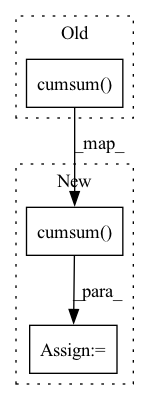

Pattern ID :31330
Before Change
sorted_out, argsort_out = lax.sort_key_val(out_token, lax.broadcasted_iota(jnp.int32, out_token.shape, dimension=2))
ranks = jnp.argsort(argsort_out)
top_p_mask = jnp.greater(jnp.cumsum( jax.nn.softmax(sorted_out), -1) , wctx.top_p)
top_p_mask = jnp.take_along_axis(top_p_mask, ranks, axis=2)
top_k_mask = jnp.less(ranks, wctx.top_k)
After Change
ranks = jnp.argsort(argsort_out, -1)
top_k_mask = jnp.less(ranks, wctx.top_k)
cumulative_probabilities = jnp.cumsum( jax.nn.softmax(sorted_out), -1)
overflow = jnp.argmax(jnp.greater(cumulative_probabilities, wctx.top_p), -1, keepdims=True) // overflow index
top_p_mask = jnp.arange(wctx.ctx.dims.sizes.vocab).reshape(1, 1, -1) > overflow // to shift by 1
top_p_mask = jnp.take_along_axis(top_p_mask, ranks, axis=2)
out_token = out_token + tempIn pattern: SUPERPATTERN
Frequency: 8
Non-data size: 3
Instances Fragment ID: 91917195
Project Name: homebrewnlp/homebrewnlp-jax
Commit Name: 80d8ee9e590659e0b0f6ea75367a50d2797ebf7e
Time: 2022-05-08
Author: 39779310+ClashLuke@users.noreply.github.com
File Name: inference.py
M Class Name: AnonimousClass
N Class Name: AnonimousClass
M Method Name: body_fn(1)
N Method Name: body_fn(1)
M Parent Class:
N Parent Class:
M File Name: inference.py
N File Name: inference.py
M Start Line: 44
M End Line: 46
N Start Line: 27
N End Line: 48
Before Change
def causal_linear_attn(q, k, v, psi = DEFAULT_PSI):
q = q.softmax(dim=-1)
k = psi(k)
k_cumsum = k.cumsum(dim=1) .unsqueeze(-1)
context = torch.einsum("bhnd,bhne->bhnde", k, v)
context_cumsum = context.cumsum(dim=1)After Change
def causal_linear_attn(q, k, v, psi = DEFAULT_PSI, one_kv_head = False):
q = q.softmax(dim=-1)
k = psi(k)
k_cumsum = k.cumsum(dim=1)
context_einsum_eq = "bhnd,bhne->bhnde" if not one_kv_head else "bnd,bne->bnde"
context = torch.einsum(context_einsum_eq, k, v)
context_cumsum = context.cumsum(dim=1)
context = safe_div(context_cumsum, k_cumsum.unsqueeze(-1))
attn_einsum_eq = "bhnd,bhnde->bhne" if not one_kv_head else "bhnd,bnde->bhne"
attn = torch.einsum(attn_einsum_eq, q, context) Fragment ID: 91917192
Project Name: lucidrains/linear-attention-transformer
Commit Name: be1141f1b2a0a9b6456f5f286b9d841a5bc9b0e4
Time: 2020-06-04
Author: lucidrains@gmail.com
File Name: linear_attention_transformer/linear_attention_transformer.py
M Class Name: AnonimousClass
N Class Name: AnonimousClass
M Method Name: causal_linear_attn(5)
N Method Name: causal_linear_attn(4)
M Parent Class:
N Parent Class:
M File Name: linear_attention_transformer/linear_attention_transformer.py
N File Name: linear_attention_transformer/linear_attention_transformer.py
M Start Line: 137
M End Line: 142
N Start Line: 139
N End Line: 151
Before Change
context_einsum_eq = "bhund,bhune->bhude" if not one_kv_head else "bund,bune->bude"
context = torch.einsum(context_einsum_eq, b_k, b_v)
context_cumsum = context.cumsum(dim=-3)
context = safe_div(context_cumsum, b_k_cumsum.unsqueeze(-1))
if buckets != n:After Change
context_einsum_eq = "bhund,bhune->bhude" if not one_kv_head else "bund,bune->bude"
context = torch.einsum(context_einsum_eq, b_k, b_v)
context_cumsum = context.cumsum(dim=-3) .type(dtype)
context = safe_div(context_cumsum, b_k_cumsum.unsqueeze(-1))
if bucket_size != 1:
context = F.pad(context, (0, 0, 0, 0, 1, 0), value=0.)
seq_dim = 1 if one_kv_head else 2
context, _ = split_at_index(seq_dim, -1, context)
attn_einsum_eq = "bhund,bhude->bhune" if not one_kv_head else "bhund,bude->bhune"
attn = torch.einsum(attn_einsum_eq, b_q, context) Fragment ID: 91917214
Project Name: lucidrains/linear-attention-transformer
Commit Name: 44961eaab5473b3335bce02441bfd50d076d7af0
Time: 2020-06-05
Author: lucidrains@gmail.com
File Name: linear_attention_transformer/linear_attention_transformer.py
M Class Name: AnonimousClass
N Class Name: AnonimousClass
M Method Name: causal_linear_attn(6)
N Method Name: causal_linear_attn(6)
M Parent Class:
N Parent Class:
M File Name: linear_attention_transformer/linear_attention_transformer.py
N File Name: linear_attention_transformer/linear_attention_transformer.py
M Start Line: 157
M End Line: 177
N Start Line: 187
N End Line: 208
Before Change
q = torch.nan_to_num(torch.reciprocal(p), posinf=0)
if not self.training:
q = q.double()
s = torch.cumsum( q, dim=-1)
bias, _ = torch.cummax(s * ~mask, dim=-1)
s = torch.ceil(s - bias - eps)
s = torch.cat((s[..., :1] * 0, s), dim=-1)
pulse_pos = torch.ge(s[..., 1:] - s[..., :-1], 1)After Change
// Compute phase.
q = torch.nan_to_num(torch.reciprocal(p), posinf=0)
s = torch.cumsum( q.double(), dim=-1)
bias, _ = torch.cummax(s * ~mask, dim=-1)
phase = (s - bias).to(p.dtype)
if self.voiced_region == "pulse":
r = torch.ceil(phase)
r = torch.cat((r[..., :1] * 0, r), dim=-1)
pulse_pos = torch.ge(r[..., 1:] - r[..., :-1], 1)
e = torch.zeros(*signal_shape, device=p.device, requires_grad=False) Fragment ID: 91917212
Project Name: sp-nitech/diffsptk
Commit Name: e0e6f861ae0049d8676f26e0b9bc6629c4a7dfd4
Time: 2022-12-13
Author: takenori.yoshimura24@gmail.com
File Name: diffsptk/core/excite.py
M Class Name: ExcitationGeneration
N Class Name: ExcitationGeneration
M Method Name: forward(2)
N Method Name: forward(2)
M Parent Class: nn.Module
N Parent Class: nn.Module
M File Name: diffsptk/core/excite.py
N File Name: diffsptk/core/excite.py
M Start Line: 100
M End Line: 111
N Start Line: 97
N End Line: 124
Before Change
return values, index
def cumsum_exclusive(t):
return F.pad(t, (0, 0, 1, 0)).cumsum(dim=-2) [..., :-1, :]
def cast_tuple(el):
return el if isinstance(el, tuple) else (el,)After Change
num_pad_dims = - dim - 1
pre_padding = (0, 0) * num_pad_dims
pre_slice = (slice(None),) * num_pad_dims
padded_t = F.pad(t, (*pre_padding, 1, 0)).cumsum(dim=dim)
return padded_t[(..., slice(None, -1), *pre_slice)]
def cast_tuple(el):
return el if isinstance(el, tuple) else (el,) Fragment ID: 91917203
Project Name: lucidrains/mixture-of-experts
Commit Name: 25f1394809601852ccc9c81c5d79658d1488014c
Time: 2020-07-17
Author: lucidrains@gmail.com
File Name: mixture_of_experts/mixture_of_experts.py
M Class Name: AnonimousClass
N Class Name: AnonimousClass
M Method Name: cumsum_exclusive(2)
N Method Name: cumsum_exclusive(1)
M Parent Class:
N Parent Class:
M File Name: mixture_of_experts/mixture_of_experts.py
N File Name: mixture_of_experts/mixture_of_experts.py
M Start Line: 21
M End Line: 22
N Start Line: 21
N End Line: 27
Before Change
// for automatically offsetting unique category ids to the correct position in the categories embedding table
categories_offset = F.pad(torch.tensor(list(categories)), (1, 0), value = 0).cumsum(dim = -1) [:-1]
self.register_buffer("categories_offset", categories_offset)
self.categorical_embeds = nn.Embedding(self.num_unique_categories, dim)After Change
// for automatically offsetting unique category ids to the correct position in the categories embedding table
categories_offset = F.pad(torch.tensor(list(categories)), (1, 0), value = num_special_tokens)
categories_offset = categories_offset.cumsum(dim = -1) [:-1]
self.register_buffer("categories_offset", categories_offset)
// continuous Fragment ID: 91917187
Project Name: lucidrains/tab-transformer-pytorch
Commit Name: f831f2b36e2cf18dbf601b0fc1152154330bf6bb
Time: 2020-12-20
Author: lucidrains@gmail.com
File Name: tab_transformer_pytorch/tab_transformer_pytorch.py
M Class Name: TabTransformer
N Class Name: TabTransformer
M Method Name: __init__(1)
N Method Name: __init__(1)
M Parent Class: nn.Module
N Parent Class: nn.Module
M File Name: tab_transformer_pytorch/tab_transformer_pytorch.py
N File Name: tab_transformer_pytorch/tab_transformer_pytorch.py
M Start Line: 126
M End Line: 133
N Start Line: 127
N End Line: 139
Before Change
def _get_frame_counts(samples):
samples.compute_metadata()
frame_counts = np.cumsum(
[(fc or 0) for fc in samples.values("metadata.total_frame_count")]
)
total_frame_count = frame_counts[-1] if frame_counts.size > 0 else 0
return frame_counts, total_frame_countAfter Change
samples.compute_metadata()
frame_counts = samples.values("metadata.total_frame_count")
frame_counts = np.cumsum( [(fc or 0) for fc in frame_counts])
total_frame_count = frame_counts[-1] if frame_counts.size > 0 else 0
return frame_counts, total_frame_count
Fragment ID: 91917206
Project Name: voxel51/fiftyone
Commit Name: 3cb099c7a7e1d455ad2d1c3cd47671370928ba44
Time: 2021-09-09
Author: brimoor@umich.edu
File Name: fiftyone/core/models.py
M Class Name: AnonimousClass
N Class Name: AnonimousClass
M Method Name: _get_frame_counts(1)
N Method Name: _get_frame_counts(1)
M Parent Class:
N Parent Class:
M File Name: fiftyone/core/models.py
N File Name: fiftyone/core/models.py
M Start Line: 511
M End Line: 515
N Start Line: 540
N End Line: 546